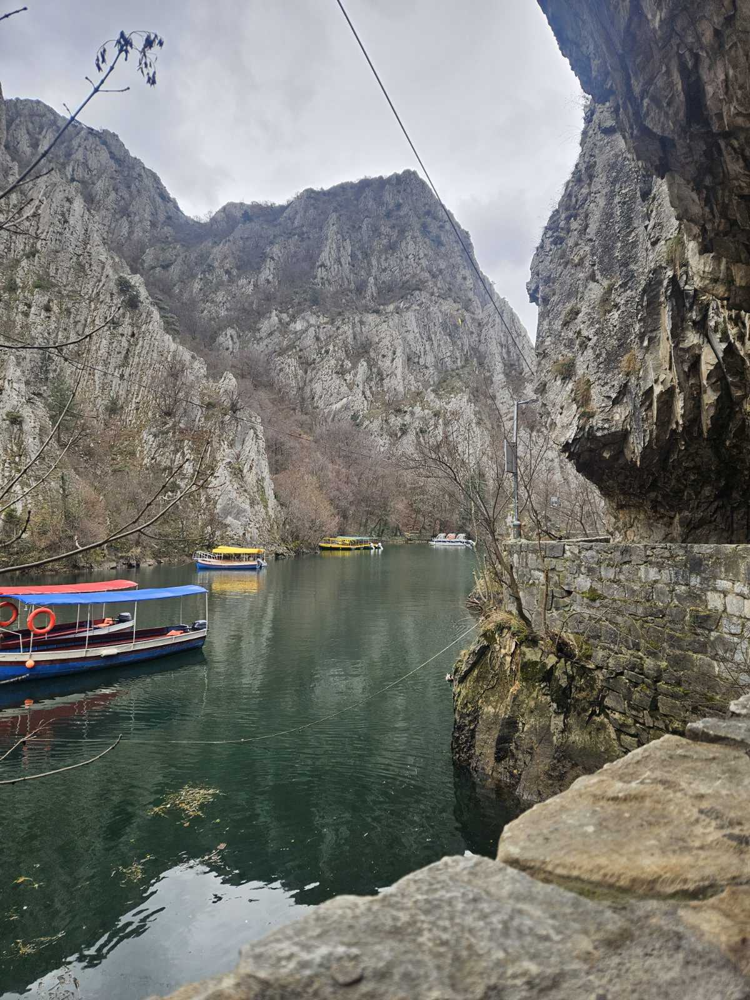
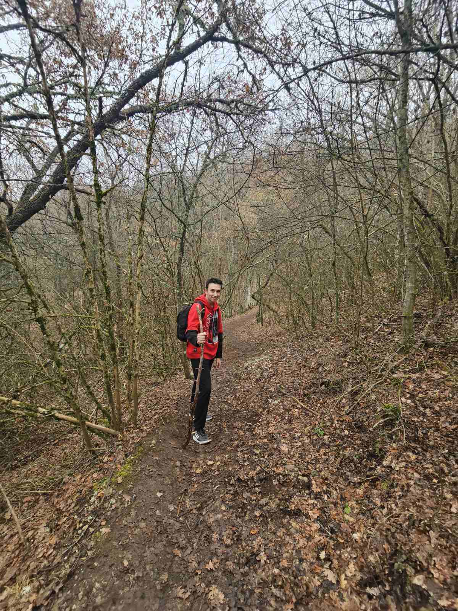

Matej Stefanovski
Web Developer & Designer
Biography
Hello! I'm Matej Stefanovski, a student at the Faculty of Computer Science and Engineering (FINKI), passionate about technology and design. I'm currently focused on growing as a web developer and constantly improving my skills in both frontend and backend development. I have hands-on experience with multiple programming languages, including JavaScript, Python, C++, and Java. Over the years, I’ve worked on various personal and academic projects that helped me strengthen my problem-solving and coding skills. I love creating beautiful and functional websites.
Education
Mathematical and Informatics High School (Математичко-Информатичка Гимназија)
2020 - 2024
- Specialized in advanced mathematics and computer science
- Courses included:
- Competitive Programming, AI Systems, Web Programming
- C++ (Structured and OOP)
- Mathematics: Geometry, Algebra, Mathematical Analysis, Economics
- Participated in various programming and math competitions
Faculty of Computer Science and Engineering (FINKI)
2024 - Present
- PIT (Software and Information Technologies)
- Currently completing 1st year with a GPA of 9.2/10, with all subjects passed
- Focused on programming, software development, databases, and information systems
Skills
Programming Languages
- HTML/CSS
- JavaScript
- Python
- C++
Tools & Technologies
- Django
- VS Code
- Figma
Soft Skills
- Problem Solving
- Team Collaboration
- Communication
Hobbies

Photography
Capturing beautiful moments and landscapes

Hiking
Exploring nature trails and mountains